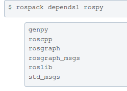
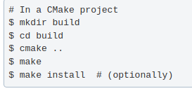

ROS
ROS Tutorials
Установка ROS
Список дистрибутивов ROS
Страницы установок ROS2: Humble, Iron, and Rolling.
Выбор установки ROS Noetic Ninjemys в зависимости от ОС
Установка ROS на ubuntu
- Setup your sources.list
Setup your computer to accept software from packages.ros.org.
sudo sh -c 'echo "deb http://packages.ros.org/ros/ubuntu $(lsb_release -sc) main" > /etc/apt/sources.list.d/ros-latest.list'
- Set up your keys
sudo apt install curl # if you haven't already installed curl
curl -s https://raw.githubusercontent.com/ros/rosdistro/master/ros.asc | sudo apt-key add -
- Installation
Убедитесь, что ваш индекс пакетов Debian обновлен:
sudo apt update
Выберите в каком комплектации установить:
Desktop-Full Install: (Recommended) : Everything in Desktop plus 2D/3D simulators and 2D/3D perception packages
В ROS доступно еще больше пакетов. Вы всегда можете установить определенный пакет напрямую.
sudo apt install ros-noetic-PACKAGE
Например:
sudo apt install ros-noetic-slam-gmapping
To find available packages, see ROS Index or use:
apt search ros-noetic
- Environment setup
You must source this script in every bash terminal you use ROS in.
source /opt/ros/noetic/setup.bash
It can be convenient to automatically source this script every time a new shell is launched. These commands will do that for you.
echo "source /opt/ros/noetic/setup.bash" >> ~/.bashrc
source ~/.bashrc
- Dependencies for building packages
На данный момент вы установили все необходимое для запуска основных пакетов ROS. Для создания собственных рабочих пространств ROS и управления ими существуют различные инструменты и требования, которые распространяются отдельно. Например, rosinstall - это часто используемый инструмент командной строки, который позволяет вам легко загружать множество деревьев исходных репозиториев для пакетов ROS с помощью одной команды.
Чтобы установить этот инструмент и другие зависимости для создания пакетов ROS, запустите:
sudo apt install python3-rosdep python3-rosinstall python3-rosinstall-generator python3-wstool build-essential
Initialize rosdep
Прежде чем вы сможете использовать многие инструменты ROS, вам необходимо инициализировать rosdep. rosdep позволяет легко устанавливать системные зависимости для исходного кода, который вы хотите скомпилировать, и необходим для запуска некоторых основных компонентов в ROS. Если вы еще не установили rosdep, сделайте это следующим образом.
sudo apt install python3-rosdep
With the following, you can initialize rosdep.
sudo rosdep init
rosdep update
Установка закончена.
Настройка ROS:
Пункты 4 и 5 из установки ROS.
Создание рабочей области catkin:
Catkin — это система сборки, используемая в ROS для управления исходным кодом.
Рабочая область catkin представляет собой каталог, в котором вы можете создавать или изменять собственные пакеты ROS.
mkdir -p ~/catkin_ws/src
cd ~/catkin_ws/
Это создаст новый каталог catkin_ws в вашем домашнем каталоге, а также каталог src внутри catkin_ws.
Инициализация рабочей области:
catkin_init_workspace src
Это создаст ссылку на CMakeLists.txt в каталоге src, который необходим для компиляции исходного кода.
Сборка рабочей области:
catkin_make
Это создаст два дополнительных каталога в каталоге catkin_ws: build и devel, которые содержат продукты сборки и среды сборки соответственно.
Добавление рабочей области в .bashrc:
Чтобы обеспечить доступ к созданным пакетам, добавьте следующую строку в ваш .bashrc:
echo "source ~/catkin_ws/devel/setup.bash" >> ~/.bashrc
source ~/.bashrc
Теперь вы готовы к созданию и управлению вашими собственными пакетами ROS в рабочей области catkin.
Основные концепции системы ROS
Ссылки: Основные концепции системы ROS
Файловая система ROS
Концепция файловой системы ROS в основном относится к ресурсам ROS, находящимся на диске, таким как:
- Пакеты (Packages): Пакет – основная единица файловой системы ROS. В основном пакет содержит выполняемые процессы ROS (узлы или ноды - nodes), библиотеки на основе ROS, наборы данных, конфигурационные файлы и прочие полезные данные. Пакет – это минимальная единица для компиляции и релиза в ROS.
Команды для работы с пакетами:
- Поиск пакета: rospack find [package_name]
- roscd: roscd [/subdir] переход к указанному пакету.
- Чтобы увидеть список каталогов, где находятся пакеты, служит команда: echo $ROS_PACKAGE_PATH
- roscd log приведет вас к папке, в которой хранятся файлы журнала ROSS. Обратите внимание, что если вы еще не запускали какие-либо программы для ROM, это приведет к ошибке, указывающей на то, что они еще не существуют.
- rosls [/subdir] показывает состав пакета, обращаясь к нему по имени, а не по абсолютному пути.
- Метапакеты (Metapackages): Метапакеты – это специализированные Пакеты, используемые для группировки других взаимосвязанных Пакетов. Используются также для обратной совместимости.
- Манифесты Пакетов (Package Manifests): Манифест (package.xml) содержит данные о пакете, включая имя, версию, описание, информацию о лицензировании, зависимости и прочую информацию, такую как экспортируемые пакеты.
- Репозитории (Repositories): набор пакетов, принадлежащих одной и той же версии. Пакеты одной и той же системы контроля версий и одинаковой версии могут выпускаться вместе с помощью инструмента автоматизации релизов bloom (http://wiki.ros.org/bloom). Репозиторий также может содержать только один пакет.
- Типы сообщений (Message types): описание сообщений, хранится в my_package/msg/MyMessageType.msg, определяет структуры данных для сообщений, передаваемых в ROS.
- Типы сервисов (Service types): описание сервисов, хранится в my_package/srv/MyServiceType.srv, определяет структуры данных для запроса и ответа сервисов в ROS.
- Рабочая область (Workspace) в ROS — это папка, где разработчики создают, собирают и настраивают свои пакеты и программы. Содержит исходный код, пакеты и сборочные скрипты.
Основная структура:
- src: директория исходного кода, где хранятся пакеты ROS
- build: временная директория, используемая во время сборки пакетов
- devel: содержит файлы, необходимые для запуска программ после сборки, включая исполняемые файлы и среду окружения
Граф вычислений ROS
Граф вычислений ROS – это одноранговая сеть процессов ROS, обрабатывающих данные. Основные понятия, связанные с графом вычислений – это ноды (nodes), Мастер (Master), Сервер Параметров (Parameter Server), сообщения (messages), сервисы (services), топики (topics), контейнеры (bags). Все эти сущности передают данные для вычислительного графа ROS разными способами.
- Ноды (Nodes): Ноды (узлы)– это программы, выполняющие вычисления. Системы использующие ROS состоят из модулей, система управления роботом включает в себя множество нод. Например, одна нода управляет лазерным дальномером, другая – моторами колёс, третья нода определяет положение в пространстве, четвёртая планирует траекторию движения, пятая предоставляет графическое представление системы, и т.д. ROS ноды разрабатывают с использованием клиентских библиотек ROS, таких как roscpp или rospy.
Некоторые команды с узлами:
- Запуск узла: rosrun package_name node_name
- Список запущенных узлов: rosnode list
- Информация об определённом узле: rosnode info node_name
- Мастер (Master): Мастер-процесс ROS обеспечивает регистрацию имён и наблюдение за всем вычислительным графом. Без мастер-процесса ноды не смогли бы найти друг друга, обмениваться сообщениями или вызывать сервисы.
- Сервер параметров (Parameter Server): Сервер параметров позволяет хранить данные с доступом по ключу в централизованном хранилище. В настоящее время Сервер Параметров является частью Мастера.
Параметры в ROS представляют собой глобальные значения, которые можно использовать для настройки поведения узлов (nodes).
Параметры могут быть различных типов: числа (целые и вещественные), строки, булевы значения, массивы и так далее.
Некоторые команды с параметрами:
- Показать список всех параметров: rosparam list
- Установить значение параметра: rosparam set
- Получить значение параметра: rrosparam get
- Загрузить параметры из файла YAML: rosparam load
- Сохранить параметры в файл YAML: rosparam dump
- Сообщения (Messages): Ноды обмениваются данными посредством передачи Сообщений. Сообщение – это структура данных, состоящая из структурированных полей. Поддерживаются стандартные примитивные типы (integer, floating point, boolean, и т.д.), а также и массивы из них. Сообщение может содержать произвольные вложенные структуры и массивы (очень похоже на структуры в языке С).
Каждое поле состоит из типа и имени, разделённых пробелом.
Типы полей могут быть:
- специальный тип Header
- встроенный тип
- другие Message
- массивы (списки)
Некоторые команды:
- Просмотр типа топика: rostopic type /topic
- Опубликовать сообщение в топике: rostopic pub /topic type args
- Просмотр определения типа сообщения: rosmsg show type
- Топики (Topics): Сообщения передаются через механизм публикации/подписки. Нода отправляет сообщение, публикуя (publish) его в определённом Топике. Топик – это имя, идентифицирующее содержание сообщения. Нода, заинтересованная в определённых данных, осуществляет подписку (subscribe) на соответствующий Топик. Для одного топика может существовать несколько параллельно публикующих/подписанных на него Нод, равно как и одна Нода может публиковать сообщения в и/или подписываться на несколько Топиков. В общес случае, публикаторы/подписчики не оказывают влияния друг на друга. Идея заключается в отделении производства информации от её использования. Логически Топик может быть представлен как строго типизированная шина сообщений. У каждой шины есть наименование, и любой элемент может подсоединиться к шине для получения и отправки сообщений соответствующего типа.
- Топик (тема) — это имя для потока сообщений
- Узлы общаются между собой посредством топиков
- Узлы могут публиковать или подписываться на топик
- Как правило, у топика один издатель и n подписчиков
Некоторые команды с топиками:
- Получение списка топиков: rostopic list
- Подписка на топик и вывод сообщений: rostopic echo /topic
- Вывод информации от топике: rostopic info /topic
- Сервисы (Services): Модель публикации/ подписки является очень гибкой, но её схема односторонней передачи сообщений «многие-многим» не подходит для взаимодействий типа «запрос-ответ», которые часто нужны в распределённой системе. Механизм «запрос-ответ» реализован через Сервисы. Сервис определяется парой структур сообщений – одна для запроса и одна для ответа. Нода предоставляет сервис, используя определённое Имя сервиса, клиент использует сервис, отправляя сообщение-запрос и ожидая ответа. Клиентские библиотеки ROS обычно представляют это взаимодействие для программиста в виде вызова удалённой процедуры.
Некоторые команды с сервисами:
- Показать список активных сервисов: rosservice list
- Вызвать сервис с определёнными аргументами: rosservice call
Сервисы настраиваются в файлах .srv Файлы .srv описывают типы сервисов в ROS: определяют структуры данных, которые сервис принимает и возвращает. Каждый .srv файл содержит две части: запрос (Request) и ответ (Response), разделённые символом "---"
- Показать структуру .srv-файла для заданного типа сервиса: rossrv show [service_type]
- Контейнеры (Bags): Контейнеры предоставляют форматы для записи и воспроизведения потоков ROS-сообщений. Контейнеры являются важным механизмом для записи данных, например, данных с сенсоров, которые трудно собрать, но необходимо сохранять для разработки и тестирования алгоритмов.
Мастер ROS играет роль сервера имён в Вычислительном графе ROS. Он хранит информацию о Топиках и Сервисах для ROS-нод. Ноды сообщают Мастеру свою регистрационную информацию. В процессе коммуникации с Мастером Ноды могут получать информацию о других зарегистрированных Нодах, устанавливать с ними связь. Мастер также осуществляет обратные вызовы к Нодам, когда регистрационная информация меняется, что позволяет нодам динамически устанавливать связи по мере запуска новых Нод.
Ноды связываются с другими Нодами напрямую. Мастер только предоставляет информацию для поиска, подобно DNS серверу. Ноды, которые подписываются на топик, запрашивают связь с Нодами, которые публикуют данные в этот топик, и устанавливают эту связь через соответсвующий согласованный протокол. Наиболее часто используемый протокол – TCPROS, он использует стандартные TCP/IP сокеты.
Такая архитектура обеспечивает раздельное функционирование системы, в которой посредством распределений имён могут быть построены большие сложные распределённые системы. Имена играют важнейшую роль в ROS: ноды, топики, сервисы и параметры все имеют имена. Каждая клиентская ROS-библиотека поддерживает переназначение (remapping) имён с помощью инструментов командной строки, т.е. скомпилированная программа может быть переконфигурирована во время выполнения для обработки различной топологии Вычислительного графа.
Например, для контроля лазерного дальномера мы запускаем драйвер hokuyo_node, который опрашивает лазер и публикует sensor_msgs/LaserScan сообщения в топик scan. Дла обработки этих данных, мы можем написать, используя пакет laser_filters, ноду, которая подписывается на сообщения топика scan. После подписки наш фильтр автоматически начнёт получать сообщения от лазера.
Теперь о том, как происходит разделение. Нода hokuyo_node только публикует сообщения, не зная о том, подписан ли на них кто либо. Нода фильтра только подписывается на сообщения топика, не зная о том, публикует ли кто-то туда сообщения. Обе ноды могут быть запущены, остановлены, перезапущены, в любом порядке, не порождая при этом ошибок.
Далее мы можем добавить роботу другой лазерный дальномер, поэтому нужно переконфигурировать систему. Всё что нужно при этом – переназначить (remap) используемые имена. При запуске ноды hokuyo_node мы можем вместо имени scan переназначить имя base_scan. B то же самое сделать с нодой – фильтром. Теперь обе эти ноды будут связаны с использованием топика base_scan, и перестанут обрабатывать сообщение тописа scan. После этого мы можем запустить ещё одну ноду hokuyo_node для нового лазерного дальномера.
Из официальной документации
- Клавиша TAB выполняет функцию автозаполнения или если дважды, то список вариантов. Например напишем ros и нажмем дважды TAB, выведутся все команды ros'а.
rosls и дважды TAB, то выведет список установленных пакетов.
Что такое catkin пакет?
Чтобы catkin пакет считался таким, он должен иметь признаки:
- пакет должен содержать файл package.xml
- должен содержать файл CMakeLists.txt
- У каждого пакета должна быть своя собственная папка. Это означает, что нет ни вложенных пакетов, ни нескольких пакетов, использующих один и тот же каталог.
Пакеты в catkin workspace
Обычный catkin workspace:

- Создание catkin-пакета.
Общий синтаксис команды создания пакета:
catkin_create_pkg [depend1] [depend2] [depend3]
catkin_create_pkg требует, чтобы вы указали ему имя пакета и, возможно, список зависимостей, от которых зависит этот пакет.
Пример:
cd ~/catkin_ws/src переходим в каталог src
catkin_create_pkg my_packet std_msgs rospy roscpp
Создаем пакет my_packet, который зависит от нод std_msgs, rospy и roscpp.В результате будет создана папка my_packet, содержащая файлы package.xml и CMakeLists.txt, которые были частично заполнены информацией, которую вы предоставили catkin_create_pkg.
Построение рабочего пространства catkin (catkin workspace) и исполнение setup файла
cd ~/catkin_ws
$ catkin_make
Будут созданы папки devel и build
Чтобы добавить переменные, нужно выполнить команду:
. ~/catkin_ws/devel/setup.bash
- Пакетные зависимости:
- Зависимости первого порядка
При использовании catkin_create_pkg ранее были предоставлены несколько зависимостей от пакетов. Эти зависимости первого порядка теперь можно просмотреть с помощью инструмента rospack:
rospack depends1
Выдаст список зависимостей, которые были установлены во время выполнения команды catkin_create_pkg. Эти зависимости хранятся в файле package.xml.
- Косвенные зависимости
Во многих случаях у зависимостей также будут свои собственные зависимости. Например, у rospy есть другие зависимости.

- Файл package.xml содержит:
тег description
теги maintainer
теги лицензии
теги зависимостей
тег конца файла ""
- CMakeLists.txt
Использование команды catkin_make
catkin_make - это инструмент объединяет вызовы cmake и make в стандартном рабочем процессе CMake.
Синтаксис:
catkin_make [make_targets] [-DCMAKE_VARIABLES=...]
Для тех, кто не знаком со стандартным рабочим процессом CMake, он выглядит следующим образом:

Чтобы выполнить команду catkin_make, сперва переходим в папку src и в ней выполняем catkin_make. В результате в папке catkin_ws будут созданы папки devel и build.
Папка build - это расположение пространства сборки по умолчанию, в котором вызываются cmake и make для настройки и сборки ваших пакетов. Папка devel - это расположение пространства разработки по умолчанию, в которое помещаются исполняемые файлы и библиотеки перед установкой пакетов.
Ноды (узлы)
Узел на самом деле представляет собой не более чем исполняемый файл в пакете ROS. Узлы ROS используют клиентскую библиотеку ROS для взаимодействия с другими узлами. Узлы могут публиковать топики (opic) или подписываться на них. Узлы также могут предоставлять или использовать службы (service).
Клиентские библиотеки ROS позволяют взаимодействовать узлам, написанным на разных языках программирования:
rospy = клиентская библиотека python
roscpp = клиентская библиотека c++
rosnode list - выводит список этих активных узлов.
Если не запускали какую-нибудь ноду, то покажет только rosout. Он всегда запущен, поскольку собирает и регистрирует выходные данные отладки узлов.
rosnode info <name_node> - покажет информацию о ноде
rosrun [package_name] [node_name] - позволит выполнить ноду node_name внутри пакета package_name без указания пути к этому пакету.
rosrun [package_name] [node_name] __name:=[new_node_name] - изменили имя ноды node_name на new_node_name.
rosnode ping [node_name] - пингуем ноду, чтобы проверить, что она запущена.
Использование rqt_graph
Программа rqt_graph показывает связи между топиками и нодами.
Чтобы установить эту программу:
sudo apt-get install ros-<distro>-rqt
sudo apt-get install ros-<distro>-rqt-common-plugins
заменить на название дистрибутива ROS: (noetic, kinetic и т.подобное).
Чтобы выполнить эту программу, команда:
$ rosrun rqt_graph rqt_graph
>Команды rostopic:
- rostopic bw display bandwidth used by topic
- rostopic echo [topic] - показывает данные, публикуемые в топик.
- rostopic hz display publishing rate of topic
- rostopic list - возвращает список всех топиков, на которые в данный момент подписаны и которые опубликованы.
Опции этой команды:
- -h, --help show this help message and exit
- -b BAGFILE, --bag=BAGFILE список топиков в .bag file
- -v, --verbose list full details about each topic
- -p list only публицистов
- -s list only подписчиков
- rostopic pub publish data to topic
- rostopic type print topic type
Ноды общаются между собой с помошью messages (сообщений). Чтобы ноды понимали друг друга, сообщения должны иметь одинаковый тип. Чтобы узнать тип сообщений, служит команда:
rostopic type [topic]
Вернёт тип (имя) сообщений, используемого для топика.
Чтобы посмотреть детали этого сообщения, используется команда:
$ rosmsg show [name_meesage]
rostopic pub [topic] [msg_type] [args]
публикует данные по объявленному топику.
Пример:
$ rostopic pub -1 /turtle1/cmd_vel geometry_msgs/Twist -- '[2.0, 0.0, 0.0]' '[0.0, 0.0, 1.8]'
- -1 Этот параметр приводит к тому, что rostopic публикует только одно сообщение, а затем завершает работу
- /turtle1/cmd_vel - это имя топика, в который отправляем (публикуем) сообщение
- geometry_msgs/Twist - это тип (имя) сообщения, которое отправляем в топик.
- -- - этот параметр (двойное тире) указывает анализатору параметров, что ни один из следующих аргументов не является параметром. Это необходимо в тех случаях, когда ваши аргументы начинаются с тире -, например, с отрицательных чисел.
- '[2.0, 0.0, 0.0]' '[0.0, 0.0, 1.8]' - сообщение geometry_msgs/Twist содержит два вектора по три элемента с плавающей запятой в каждом: линейный и угловой. В этом случае, '[2.0, 0.0, 0.0]' становится линейным значением при x=2.0, y=0.0 и z=0.0, а '[0.0, 0.0, 1.8]' - угловым значением при x=0.0, y=0.0 и z=1.8. Эти аргументы на самом деле приведены в синтаксисе YAML
Мы можем опубликовать постоянный поток команд, используя команду rostopic pub -r:
$ rostopic pub /turtle1/cmd_vel geometry_msgs/Twist -r 1 -- '[2.0, 0.0, 0.0]' '[0.0, 0.0, -1.8]
rostopic hz [topic] - сообщает о скорости публикации данных в [topic].
rqt_plot - эта утилита отображает график времени прокрутки данных, опубликованных в топиках.
Сперва нужно выполнить команду: $ rosrun rqt_plot rqt_plot